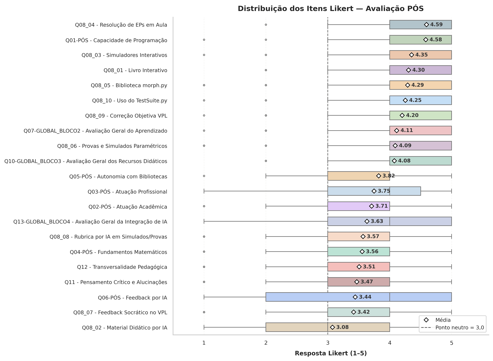

Apêndice F — Análise de Percepção e Avaliação Didática: PDI-VC 2026.2
Este apêndice apresenta a análise empírica da percepção dos estudantes sobre a experiência pedagógica na disciplina de Processamento Digital de Imagens e Visão Computacional (PDI-VC), oferecida no segundo quadrimestre de 2026.
A análise utiliza os questionários voluntários PRÉ (Perfil do Estudante) e PÓS (Avaliação da Disciplina). Os resultados contemplam quatro aspectos principais: caracterização da amostra; evolução das percepções entre o início e o final da disciplina; avaliação dos recursos didáticos; e percepção sobre a integração da Inteligência Artificial (IA) ao processo de ensino e aprendizagem.
A análise distingue explicitamente a avaliação dos recursos didáticos da avaliação da integração da IA. Essa distinção é necessária porque a IA não foi empregada da mesma maneira em todos os recursos: em alguns casos, foi utilizada apenas como ferramenta de apoio; em outros, não participou diretamente da produção do recurso; e, em três recursos específicos, participou diretamente da geração de conteúdo, feedback ou rubricas.
Caracterização da Amostra e Metodologia de Coleta
A coleta de dados foi realizada em dois momentos ao longo do quadrimestre:
- Questionário PRÉ-curso: aplicado no início do quadrimestre, antes da intervenção pedagógica, na primeira semana de aula.
- Questionário PÓS-curso: aplicado ao final do quadrimestre, após a utilização dos recursos didáticos e das estratégias avaliadas neste apêndice, juntamente com a prova final.
Foram obtidas 104 respostas no questionário PRÉ e 79 respostas no questionário PÓS. A partir das informações fornecidas pelos estudantes para possibilitar a identificação dos respondentes nos dois momentos, foi possível identificar 10 estudantes que responderam a ambos os questionários, constituindo a amostra pareada utilizada para avaliar a evolução individual.
A distribuição dos respondentes entre as três turmas nos dois momentos de coleta é apresentada na Tabela F.1. As turmas DA1 e DA2 correspondem à graduação, oferecida no período matutino, enquanto a turma MCC corresponde à pós-graduação, oferecida no período vespertino. Observa-se redução do número de respostas em todas as turmas entre o PRÉ e o PÓS: a DA1 passou de 39 para 38 respondentes, a DA2 de 46 para 30 e a MCC de 19 para 11. Assim, a redução amostral não ocorreu de maneira uniforme entre as turmas.
| Turma | PRÉ (\(n\)) | PÓS (\(n\)) |
|---|---|---|
| DA1 | 39 | 38 |
| DA2 | 46 | 30 |
| MCC | 19 | 11 |
| Total | 104 | 79 |
A diferença na composição dos respondentes entre PRÉ e PÓS deve ser considerada na interpretação dos resultados. Para a análise da evolução individual, devem ser priorizados os resultados do teste de Wilcoxon (Wilcoxon, 1945) aplicado aos 10 estudantes pareados.
Devido à natureza ordinal das escalas Likert de cinco pontos, foram empregados testes estatísticos não paramétricos. Para comparações entre amostras independentes, utilizou-se o teste de Mann–Whitney U (Mann; Whitney, 1947); para comparações entre mais de dois grupos independentes, o teste de Kruskal–Wallis (Kruskal; Wallis, 1952); e, para comparar diferentes recursos avaliados pelos mesmos estudantes, o teste de Friedman (Friedman, 1937). A evolução individual entre PRÉ e PÓS foi analisada pelo teste de Wilcoxon para amostras pareadas.
Para complementar os testes de significância, foram considerados tamanhos de efeito, correlações de Spearman, consistência interna pelo \(\alpha\) de Cronbach e preferências declaradas.
Nota metodológica. Os testes estatísticos identificam diferenças e associações, mas não estabelecem relações causais. Em particular, diferenças entre recursos que utilizaram ou não IA não podem ser interpretadas isoladamente como efeito causal da tecnologia, pois os recursos possuem finalidades, formatos, níveis de interação e momentos de utilização distintos.
Itens do questionário PÓS
O questionário PÓS foi organizado em cinco blocos. O Bloco 1 contém apenas a identificação opcional do estudante e a escolha de uma das três turmas. O Bloco 2, apresentado na Tabela F.2, aborda a percepção sobre a aprendizagem; o Bloco 3, apresentado na Tabela F.3, avalia os recursos didáticos; o Bloco 4, apresentado na Tabela F.4, investiga a percepção sobre a integração da IA; e o Bloco 5, apresentado na Tabela F.5, reúne duas questões abertas.
| Item | Descrição |
|---|---|
Q01 |
Capacidade de programação: percepção da capacidade atual para resolver problemas computacionais básicos utilizando programação. |
Q02 |
Atuação acadêmica: contribuição dos conhecimentos desenvolvidos na disciplina para a atuação acadêmica em outras disciplinas. |
Q03 |
Atuação profissional: percepção sobre a utilidade dos conhecimentos desenvolvidos na disciplina para a futura atuação profissional. |
Q04 |
Fundamentos matemáticos: autopercepção sobre o domínio de Álgebra Linear e Cálculo, considerando os conceitos utilizados em PDI. |
Q05 |
Autonomia com bibliotecas: capacidade percebida de utilizar bibliotecas de processamento de dados e imagens, como OpenCV, NumPy, Matplotlib e morph.py. |
Q06 |
Feedback por IA: percepção sobre a utilidade do feedback automático de código gerado por IA. |
Q07 |
Avaliação geral do aprendizado: percepção sobre a evolução do conhecimento teórico e prático em PDI-VC ao longo da disciplina. |
O Bloco 3 reúne dez itens de avaliação dos recursos didáticos (Q08_01–Q08_10), além de uma questão específica sobre o acesso ao VPL (Q08_11), uma questão de preferência (Q09) e uma avaliação global dos recursos (Q10).
| Item | Descrição |
|---|---|
Q08_01 |
Livro Interativo: contribuição do material em HTML/IPYNB/PDF, com teoria integrada e simuladores, para o aprendizado. |
Q08_02 |
Material Didático por IA: contribuição dos vídeos curtos e slides produzidos com Gemini Notebook para introdução e síntese do conteúdo antes das atividades práticas. |
Q08_03 |
Simuladores Interativos: contribuição da manipulação visual de parâmetros em tempo real para a compreensão dos algoritmos. |
Q08_04 |
Resolução de EPs em Aula: importância da resolução acompanhada dos Exercícios de Programação para o desempenho prático. |
Q08_05 |
Biblioteca morph.py: contribuição da biblioteca didática para tornar os algoritmos mais transparentes e compreensíveis. |
Q08_06 |
Provas e Simulados Paramétricos: percepção sobre a eficácia e justiça das avaliações parametrizadas pelo MCTest e aplicadas via SEB. |
Q08_07 |
Feedback Socrático no VPL: contribuição do feedback qualitativo gerado por IA para identificar e corrigir erros de lógica nos códigos. |
Q08_08 |
Rubrica por IA em Simulados/Provas: contribuição dos relatórios com rubrica detalhada por IA para a revisão das avaliações. |
Q08_09 |
Correção Objetiva no VPL: contribuição da validação automática por casos de teste para fornecer retorno rápido sobre o funcionamento do código. |
Q08_10 |
Uso do TestSuite.py: contribuição da ferramenta para testar os EPs no Colab antes da submissão no VPL do Moodle. |
Q08_11 |
Acesso ao VPL restrito à UFABC: impacto da impossibilidade de acessar o VPL fora da rede da UFABC sobre os estudos. |
Q09 |
Preferência pelos recursos: seleção de quatro recursos didáticos considerados mais eficazes para o processo de estudo. |
Q10 |
Avaliação geral dos recursos: percepção global sobre a eficácia do conjunto de recursos metodológicos oferecidos na disciplina. |
O item Q08_11 e a questão Q09 não integram a síntese dos 21 itens Likert apresentada ao final deste apêndice, pois possuem finalidade distinta da avaliação ordinal dos recursos.
| Item | Descrição |
|---|---|
Q11 |
Pensamento crítico e limitações da IA: percepção sobre o estímulo ao senso crítico diante de limitações ou imprecisões nas respostas da IA. |
Q12 |
Transversalidade pedagógica da IA: avaliação da adoção, em outras disciplinas, da integração entre produção de material, feedback socrático e rubricas por IA. |
Q13 |
Avaliação geral da integração da IA: percepção sobre o valor agregado pelo uso transversal e transparente de IA na experiência de aprendizado. |
Bloco 5 — Questões Abertas
| Item | Descrição |
|---|---|
Q14 |
Maior contribuição da IA: identificação do uso da IA que proporcionou maior ganho para o aprendizado, acompanhada da justificativa. |
Q15 |
Dificuldades e ajustes metodológicos: identificação do elemento da metodologia que apresentou maior dificuldade ou que necessita de ajustes em futuras ofertas. |
Perfil acadêmico dos participantes
A interpretação dos resultados deve considerar o perfil acadêmico dos participantes. Entre os estudantes de graduação, a amostra é composta predominantemente por estudantes em etapa avançada da formação, e não por ingressantes.
Na questão sobre cursos que estão cursando ou pretendem cursar após o Bacharelado Interdisciplinar, 88 estudantes indicaram Ciência da Computação e 30 indicaram Ciência de Dados, sendo permitida a seleção de mais de uma opção.
| Curso/área indicada | Estudantes (\(n\)) | Percentual* |
|---|---|---|
| Ciência da Computação | 88 | 85,4% |
| Ciência de Dados | 30 | 29,1% |
- Percentuais calculados sobre os 104 respondentes. Como a questão permitia múltiplas respostas, os percentuais não são mutuamente exclusivos e podem somar mais de 100%.
Esse perfil ajuda a contextualizar a elevada autopercepção de capacidade de programação (Q01) observada no PRÉ. Os estudantes de graduação já se encontravam, em sua maioria, em etapa avançada do curso e apresentavam trajetória acadêmica relacionada à Computação ou à Ciência de Dados.
Além disso, Processamento Digital de Imagens (PDI) não constitui componente obrigatório da matriz curricular de todos esses cursos, de modo que a experiência prévia em PDI não pode ser presumida a partir da formação acadêmica.
Os estudantes de pós-graduação, por sua vez, apresentaram formações de origem mais diversificadas, incluindo áreas como Física, Engenharia Biomédica, Matemática, Ciências Atuariais, Biotecnologia, Computação e Ciência de Dados. Essa heterogeneidade torna potencialmente mais variável a experiência prévia em programação e processamento de imagens nesse grupo.
Assim, a elevada capacidade de programação observada no PRÉ (ver Tabela F.7) deve ser interpretada considerando a composição da amostra: na graduação, predominam estudantes em fase avançada de formação, enquanto na pós-graduação há maior diversidade de formações de origem. Esse perfil constitui também uma possível explicação para um efeito teto na capacidade de programação, cuja média permaneceu elevada entre os dois momentos.
Evolução da Percepção dos Estudantes: PRÉ versus PÓS
A comparação entre os questionários PRÉ e PÓS investiga possíveis mudanças nas percepções dos estudantes ao longo da disciplina. Foram obtidas 104 respostas no PRÉ e 79 no PÓS. Entre esses respondentes, 10 estudantes puderam ser identificados nos dois momentos, constituindo a amostra pareada utilizada na análise da evolução individual.
A análise considera seis dimensões:
- Capacidade de programação (
PRE_Q01 → Q01); - Feedback por IA (
PRE_Q02 → Q06); - Atuação acadêmica (
PRE_Q03 → Q02); - Atuação profissional (
PRE_Q04 → Q03); - Fundamentos matemáticos (
PRE_Q05 → Q04); - Autonomia com bibliotecas (
PRE_Q06 → Q05).
As médias e medianas apresentadas na Tabela F.7 referem-se às amostras completas (PRÉ \(N=104\); PÓS \(N=79\)) e têm finalidade descritiva — são os mesmos valores reportados na Tabela F.8. A evolução individual, por sua vez, foi avaliada pelo teste de Wilcoxon aplicado aos 10 estudantes pareados; por se tratar de um teste baseado em postos (e, portanto, mais associado à mediana do que à média), a mediana é reportada ao lado da média para facilitar a leitura conjunta com o resultado do teste.
| Dimensão | Média PRÉ (\(N=104\)) | Média PÓS (\(N=79\)) | Mediana PRÉ | Mediana PÓS | \(p\) Wilcoxon (pareado, \(n=10\)) | Interpretação |
|---|---|---|---|---|---|---|
| Capacidade de programação | 4,481 | 4,582 | 5 | 5 | 1,000 | Sem evidência de mudança |
| Feedback por IA | 3,981 | 3,443 | 4 | 4 | 0,766 | Sem evidência de mudança |
| Atuação acadêmica | 4,385 | 3,709 | 5 | 4 | 0,438 | Sem evidência de mudança |
| Atuação profissional | 4,356 | 3,747 | 5 | 4 | 0,375 | Sem evidência de mudança |
| Fundamentos matemáticos | 3,212 | 3,557 | 3 | 4 | 0,531 | Sem evidência de mudança |
| Autonomia com bibliotecas | 3,663 | 3,823 | 4 | 4 | 0,625 | Sem evidência de mudança |
Os resultados do teste de Wilcoxon não forneceram evidência estatisticamente significativa de mudança sistemática entre PRÉ e PÓS em nenhuma das seis dimensões (\(p>0,05\)). A ausência de significância estatística, entretanto, não demonstra a inexistência de mudança; indica apenas que, com os 10 pares disponíveis, não foi obtida evidência estatística suficiente para detectá-la.
A capacidade de programação apresentou médias elevadas nos dois momentos, passando de 4,481 para 4,582. O resultado do teste pareado (\(p=1,000\)) indica que essa pequena variação não constitui evidência de mudança sistemática.
O feedback por IA apresentou redução descritiva da média, de 3,981 para 3,443, mas a comparação pareada não foi estatisticamente significativa (\(p=0,766\)). Também foram observadas reduções em atuação acadêmica e atuação profissional, respectivamente de 4,385 para 3,709 e de 4,356 para 3,747, sem evidência estatística de mudança (\(p=0,438\) e \(p=0,375\)).
Em sentido contrário, fundamentos matemáticos apresentou aumento de 3,212 para 3,557, enquanto autonomia com bibliotecas passou de 3,663 para 3,823. Também nesses casos não houve diferença estatisticamente significativa (\(p=0,531\) e \(p=0,625\)).
As variações observadas em atuação acadêmica e profissional podem ser compatíveis com uma recalibração das expectativas e da autoavaliação, à medida que o estudante entra em contato com problemas concretos de PDI-VC. Essa interpretação, entretanto, constitui uma hipótese pedagógica, e não uma conclusão causal decorrente dos testes estatísticos.
Análise complementar entre as amostras completas
Como análise complementar, o teste de Mann–Whitney U foi aplicado às amostras completas do PRÉ (\(N=104\)) e do PÓS (\(N=79\)), sem considerar o pareamento entre indivíduos.
| Dimensão | Média PRÉ | Média PÓS | Mediana PRÉ | Mediana PÓS | \(d\) de Cohen | \(p\)-valor | Efeito |
|---|---|---|---|---|---|---|---|
| Atuação acadêmica | 4,385 | 3,709 | 5 | 4 | -0,777 | \(<0,001\) | Médio |
| Atuação profissional | 4,356 | 3,747 | 5 | 4 | -0,659 | \(<0,001\) | Médio |
| Feedback por IA | 3,981 | 3,443 | 4 | 4 | -0,466 | 0,009 | Pequeno |
| Fundamentos matemáticos | 3,212 | 3,557 | 3 | 4 | 0,322 | 0,036 | Pequeno |
| Capacidade de programação | 4,481 | 4,582 | 5 | 5 | 0,136 | 0,230 | Muito pequeno |
| Autonomia com bibliotecas | 3,663 | 3,823 | 4 | 4 | 0,139 | 0,866 | Muito pequeno |
Para a interpretação do \(d\) de Cohen, foram adotados, de forma aproximada, os seguintes intervalos: valores absolutos inferiores a 0,20 foram considerados muito pequenos; entre 0,20 e 0,49, pequenos; entre 0,50 e 0,79, médios; e iguais ou superiores a 0,80, grandes.
A análise das amostras completas identificou diferenças estatisticamente significativas em atuação acadêmica, atuação profissional, feedback por IA e fundamentos matemáticos. Os maiores tamanhos de efeito ocorreram em atuação acadêmica e profissional, ambos classificados como médios segundo o critério adotado.
Esses resultados, contudo, não devem ser interpretados como evidência de evolução individual. Como o teste compara amostras independentes, as diferenças podem refletir tanto mudanças ocorridas ao longo da disciplina quanto diferenças na composição dos respondentes entre os dois momentos.
A diferença na composição dos respondentes entre PRÉ e PÓS deve ser considerada na interpretação dos resultados. Portanto, as diferenças observadas entre as amostras completas constituem evidências de diferenças entre os dois conjuntos de respondentes, e não demonstrações de evolução ou regressão decorrentes da disciplina. Para a análise da evolução individual, devem ser priorizados os resultados do teste de Wilcoxon aplicado aos 10 estudantes pareados.
Avaliação dos Recursos Didáticos no PÓS — Teste de Friedman
O Bloco 3 do questionário PÓS avalia dez recursos didáticos utilizados durante a disciplina, correspondentes aos itens Q08_01–Q08_10. Os recursos representam práticas pedagógicas distintas: alguns não utilizaram IA diretamente, outros utilizaram IA como ferramenta de apoio e três utilizaram IA diretamente na geração de conteúdo, feedback ou rubricas. Foram considerados \(N=79\) estudantes, cada um avaliando os dez recursos.
O teste de Friedman (Friedman, 1937) indicou diferença estatisticamente significativa entre as avaliações dos dez recursos, χ²(9) = 189,299, p < 0,001, rejeitando a hipótese de que todos apresentassem avaliações equivalentes. O resultado demonstra, portanto, que os estudantes diferenciaram os recursos quanto à sua avaliação.
O W de Kendall (Kendall, 1945) apresentou valor \(W = 0,266\), indicando concordância baixa a moderada entre os estudantes quanto à ordenação dos recursos. Assim, embora exista diferença estatisticamente significativa entre as avaliações, não há forte consenso entre os estudantes sobre a ordem de preferência dos dez recursos.
Classificação dos recursos segundo o papel da IA
Para interpretar adequadamente os resultados, os dez recursos podem ser classificados em três grupos:
| Categoria | Recursos | Participação da IA |
|---|---|---|
| Sem uso direto de IA | Q08_04 — Resolução de EPs em Aula; Q08_09 — Correção Objetiva VPL | A IA não participa diretamente do recurso |
| IA como ferramenta de apoio | Q08_01 — Livro Interativo; Q08_03 — Simuladores Interativos; Q08_05 — Biblioteca morph.py; Q08_06 — Provas e Simulados Paramétricos; Q08_10 — TestSuite.py |
Apoio à programação, preparação ou formatação |
| IA com participação direta | Q08_02 — Material Didático por IA; Q08_07 — Feedback Socrático no VPL; Q08_08 — Rubrica por IA em Simulados/Provas | Geração direta de conteúdo, feedback ou rubrica |
Essa classificação evita tratar o uso de IA como uma única intervenção pedagógica. O emprego da IA como ferramenta de apoio à implementação ou à formatação difere de sua participação direta na geração de material didático, feedback ou rubricas.
Ranking das avaliações dos recursos
A ordenação das médias de Q08, acompanhada da mediana e do teste de diferença em relação ao valor neutro 3,0, está apresentada na Tabela F.9.
| Posição | Item | Recurso | Média | DP | Mediana | \(p\) vs. 3,0 |
|---|---|---|---|---|---|---|
| 1 | Q08_04 |
Resolução de EPs em aula | 4,59 | 0,65 | 5 | \(<0,001\) |
| 2 | Q08_03 |
Simuladores interativos | 4,35 | 0,85 | 5 | \(<0,001\) |
| 3 | Q08_01 |
Livro interativo | 4,30 | 0,81 | 4 | \(<0,001\) |
| 4 | Q08_05 |
Biblioteca morph.py |
4,29 | 1,05 | 5 | \(<0,001\) |
| 5 | Q08_10 |
Uso do TestSuite.py |
4,25 | 0,94 | 5 | \(<0,001\) |
| 6 | Q08_09 |
Correção objetiva no VPL | 4,20 | 1,02 | 5 | \(<0,001\) |
| 7 | Q08_06 |
Provas e simulados paramétricos | 4,09 | 1,08 | 4 | \(<0,001\) |
| 8 | Q08_08 |
Rubrica por IA em simulados/provas | 3,57 | 1,09 | 3 | \(<0,001\) |
| 9 | Q08_07 |
Feedback socrático no VPL | 3,42 | 1,23 | 4 | 0,006 |
| 10 | Q08_02 |
Material didático por IA | 3,08 | 1,37 | 3 | 0,758 |
Os sete primeiros recursos apresentaram médias superiores a 4,0. A Resolução de EPs em aula obteve a maior avaliação (4,59), seguida pelos Simuladores interativos (4,35) e pelo Livro interativo (4,30).
Além disso, os sete primeiros recursos apresentaram médias significativamente superiores ao valor neutro de 3,0 (p < 0,001). A rubrica por IA (M = 3,57; p < 0,001) e o feedback socrático no VPL (M = 3,42; p = 0,006) também apresentaram avaliações superiores ao neutro, embora com médias menores. Já o material didático por IA (M = 3,08; p = 0,758) não diferiu estatisticamente do valor neutro, indicando uma avaliação essencialmente neutra.
Os três recursos com participação direta da IA na produção de conteúdo, feedback ou rubricas apresentaram as três menores médias entre os dez recursos avaliados:
- Material didático por IA (Apêndice D): média 3,08;
- Feedback socrático no VPL (Zampirolli et al., 2026): média 3,42;
- Rubrica por IA em simulados/provas (Apêndice E): média 3,57.
No caso do feedback socrático, é importante considerar que a experiência descrita em (Zampirolli et al., 2026) ocorreu em um contexto pedagógico distinto: uma disciplina introdutória de Lógica de Programação, com problemas de menor complexidade em comparação com os problemas de PDI-VC. Naquela aplicação, o feedback por IA era produzido a partir exclusivamente do código submetido pelo estudante, sem comentários ou a descrição do enunciado da questão, seguido de um prompt socrático. Em PDI-VC, além da maior complexidade dos problemas, os estudantes são estimulados a utilizar a biblioteca didática morph.py, o que introduz uma camada adicional de abstração e de conhecimento específico do domínio.
Esse padrão é relevante para a discussão pedagógica, mas não permite atribuir as avaliações inferiores à utilização da IA. Os recursos também diferem quanto ao objetivo pedagógico, à forma de interação, ao grau de autonomia proporcionado ao estudante, à complexidade das tarefas e ao momento de utilização. Portanto, as diferenças observadas devem ser interpretadas como características da avaliação dos recursos em seus respectivos contextos pedagógicos, e não como evidência isolada de um efeito da utilização da IA.
Comparações múltiplas — Pós-teste de Conover
Como o teste de Friedman foi significativo, foi aplicado o pós-teste de Conover (Conover, 1971), com correção de Bonferroni (Dunn, 1961), para identificar diferenças entre pares de recursos.
O resultado geral indica que o Material Didático por IA (Q08_02), gerados pelo Gemini Notebook, se encontra entre os recursos com menor avaliação e apresenta diferenças significativas em relação a parte dos recursos mais bem avaliados.
Os resultados do pós-teste devem ser interpretados considerando a correção para comparações múltiplas. Portanto, diferenças entre médias não devem ser interpretadas automaticamente como diferenças estatisticamente significativas.
A análise completa do pós-teste é apresentada graficamente e em tabelas no notebook estatístico que acompanha este apêndice. O material será disponibilizado após a anonimização dos dados.
Preferências Declaradas — Q09
A questão Q09 complementa a avaliação ordinal de Q08, solicitando aos estudantes que selecionassem quatro recursos didáticos considerados mais efetivos para sua aprendizagem, sem estabelecer uma ordem de preferência entre eles. O ranking apresentado na Tabela F.10 foi construído pela frequência de seleção dos recursos, e não por uma ordenação ordinal atribuída pelos estudantes.
| Posição | Recurso | Escolhas | Percentual |
|---|---|---|---|
| 1º | Exercícios Práticos (EPs em aula) | 62 | 78,5% |
| 2º | Biblioteca morph.py |
58 | 73,4% |
| 3º | Simuladores Interativos | 44 | 55,7% |
| 4º | Livro Interativo | 43 | 54,4% |
| 5º | Simulados no Safe Exam Browser (SEB) | 40 | 50,6% |
| 6º | TestSuite.py |
32 | 40,5% |
| 7º | Casos de teste automatizados no VPL | 21 | 26,6% |
| 8º | Gemini Notebook — recursos de áudio/visual | 6 | 7,6% |
| 9º | Feedback Socrático por IA no VPL | 5 | 6,3% |
| 10º | Rubrica de correção por IA | 5 | 6,3% |
Os EPs em aula e a biblioteca morph.py foram os recursos mais escolhidos, enquanto os recursos associados diretamente à geração de conteúdo, feedback ou rubricas por IA ficaram entre os menos selecionados.
A convergência entre Q08 e Q09 reforça a importância atribuída pelos estudantes à prática guiada, à programação e à interação direta com os recursos da disciplina.
Avaliação Global dos Recursos Didáticos — Q10
A questão Q10 (Q10-GLOBAL_BLOCO3) fornece uma avaliação global dos recursos didáticos apresentados no Bloco 3.
A avaliação global apresentou média de aproximadamente 4,08, com mediana 4, indicando percepção geral positiva dos recursos utilizados na disciplina.
Para investigar a relação entre as avaliações específicas e a avaliação global, foi calculado o escore médio dos dez itens de Q08 e correlacionado com Q10 por meio do coeficiente de Spearman (Spearman, 1904):
\[ \rho = 0,520,\qquad p < 0,001. \]
A correlação positiva e moderada indica que estudantes que avaliaram mais favoravelmente o conjunto dos recursos também tenderam a apresentar avaliações globais mais positivas.
Esse resultado demonstra coerência entre as avaliações específicas e a percepção global, mas não permite determinar quais recursos individualmente explicam a avaliação de Q10.
Confiabilidade dos Recursos Didáticos
A consistência interna dos dez itens de Q08 foi avaliada pelo \(\alpha\) de Cronbach (Cronbach, 1951), obtendo-se o valor:
\[ \alpha = 0,847. \]
Esse valor indica boa consistência interna da escala.
Entretanto, os dez itens representam recursos pedagogicamente distintos. Portanto, uma consistência interna adequada não significa que todos constituam uma única intervenção ou construto pedagógico. O resultado indica apenas coerência suficiente entre as respostas para a análise conjunta da escala.
Diferenças entre Turmas
As avaliações dos recursos didáticos também foram comparadas entre as diferentes turmas, compostas por duas turmas da graduação e uma turma do mestrado.
Para a avaliação global Q10, o teste de Kruskal–Wallis apresentou:
\[ H = 4,608,\qquad p = 0,100. \]
Não foi observada diferença estatisticamente significativa entre as turmas ao nível de 5%. Assim, embora possam existir diferenças descritivas entre os grupos, não há evidência estatística suficiente para afirmar que as turmas avaliaram globalmente os recursos didáticos de maneira diferente.
Uso Transversal e Integração da IA
Enquanto o Bloco 3 avalia recursos didáticos específicos, o Bloco 4 investiga diretamente a percepção dos estudantes sobre a integração da IA no processo de ensino e aprendizagem.
Foram analisados três itens:
Q11— Pensamento crítico e alucinações;Q12— Transversalidade pedagógica, aplicada em outras disciplinas;Q13— Avaliação geral da integração de IA.
As estatísticas descritivas e os respectivos testes de diferença em relação ao ponto neutro da escala são apresentados na Tabela F.11.
| Item | Descrição | Média | Mediana | \(p\) vs. neutro |
|---|---|---|---|---|
Q11 |
Pensamento crítico e alucinações | 3,47 | 4 | \(<0,001\) |
Q12 |
Transversalidade pedagógica | 3,51 | 4 | 0,002 |
Q13 |
Avaliação geral da integração de IA | 3,63 | 4 | \(<0,001\) |
Os três itens apresentaram evidência estatística de avaliações superiores ao ponto neutro da escala (3,0). A maior média foi observada em Q13 (3,63), referente à avaliação geral da integração da IA, seguida por Q12 (3,51) e Q11 (3,47). As medianas dos três itens foram iguais a 4. Esses resultados indicam uma percepção globalmente positiva dos estudantes sobre a integração da IA no processo de ensino e aprendizagem, embora com avaliações mais moderadas do que as observadas para a maioria dos recursos didáticos tradicionais ou diretamente relacionados às atividades práticas.
A consistência interna dos itens Q11 e Q12 foi avaliada pelo \(\alpha\) de Cronbach (Cronbach, 1951):
\[ \alpha = 0,780. \]
Esse resultado indica associação interna adequada entre os dois itens. Entretanto, a interpretação da confiabilidade deve ser feita com cautela, pois a medida é baseada em apenas dois itens e, portanto, não é suficiente, isoladamente, para estabelecer a existência de uma dimensão psicométrica ampla.
A relação entre os aspectos de pensamento crítico e transversalidade (Q11 e Q12) e a avaliação global da integração da IA (Q13) foi forte e estatisticamente significativa:
\[ \rho = 0,774,\qquad p < 0,001. \]
Assim, estudantes com percepção mais favorável sobre o uso crítico e transversal da IA tendem também a avaliar mais positivamente sua integração geral na disciplina.
Para Q13, a comparação entre as turmas não apresentou diferença estatisticamente significativa:
\[ H = 3,113,\qquad p = 0,211. \]
Síntese dos Resultados
A Figura F.1 apresenta a distribuição das respostas dos 21 itens Likert analisados no questionário PÓS. A ordenação segue a média decrescente, permitindo visualizar conjuntamente a posição central, a dispersão e a relação das respostas com o ponto neutro da escala.
Os resultados convergem para três padrões principais: a valorização de atividades práticas e interativas; a ausência de evidência estatística de mudança individual nas seis dimensões comparadas entre PRÉ e PÓS; e uma avaliação globalmente positiva da integração da IA, embora os recursos nos quais a IA participou diretamente da geração de conteúdo, feedback ou rubricas tenham recebido avaliações inferiores às de vários recursos práticos.

A análise longitudinal deve ser interpretada com cautela, pois somente 10 estudantes puderam ser identificados nos dois momentos. Nesse grupo, não foi encontrada evidência estatisticamente significativa de mudança em nenhuma das seis dimensões analisadas. As diferenças observadas nas amostras completas pelo teste de Mann–Whitney U devem ser interpretadas como diferenças entre os conjuntos de respondentes, e não como evidência de evolução individual.
Quanto aos recursos didáticos, o teste de Friedman mostrou que as dez avaliações não foram estatisticamente equivalentes (\(\chi^2=189,299\), \(p<0,001\)), com magnitude moderada segundo o W de Kendall (\(W=0,266\)). Os resultados de Q08 e Q09 convergem ao destacar prática guiada, programação, experimentação e interação como componentes particularmente valorizados.
A integração da IA, por sua vez, recebeu avaliação global positiva. Entretanto, os três recursos com participação direta da IA na geração de conteúdo, feedback ou rubricas apresentaram médias inferiores às de diversos recursos práticos e interativos. O Material Didático por IA, produzido com o Gemini Notebook, apresentou a menor média entre os itens de Q08 (3,08) e foi o único dos 21 itens analisados cuja avaliação não apresentou evidência estatística de diferença em relação ao ponto neutro da escala.
Esse padrão é compatível com a hipótese de que a percepção dos estudantes dependa não apenas da presença da IA, mas também da forma como ela é integrada à atividade pedagógica. Trata-se, contudo, de uma interpretação exploratória, que não permite estabelecer efeito causal da forma de integração da IA sobre as avaliações.
Tabela Síntese dos Resultados Estatísticos
Como síntese quantitativa final, a Tabela F.12 reúne os 21 itens Likert analisados nos Blocos 2, 3 e 4 do questionário PÓS. Esses itens correspondem a Q01–Q07, Q08_01–Q08_10, Q10 e Q11–Q13. A tabela está ordenada pela média decrescente, permitindo comparar diretamente as diferentes dimensões avaliadas pelos estudantes.
O item Q08_11 e a questão de preferência Q09 não integram essa síntese, pois possuem finalidade distinta da avaliação ordinal dos 21 itens considerados.
Para cada item são apresentados o bloco, a identificação da questão, uma descrição resumida, a média, o desvio-padrão (DP), a mediana e o valor de \(p\) obtido pelo teste de postos sinalizados de Wilcoxon para uma amostra, tendo como referência o ponto neutro da escala (3,0). O número de respostas válidas é constante (\(N=79\)) e, por isso, é informado no caption da tabela.
O teste de Wilcoxon foi utilizado para verificar se as respostas apresentavam evidência de deslocamento em relação ao ponto neutro da escala. Adotou-se o nível de significância de 5%, considerando-se estatisticamente significativo o resultado com \(p<0,05\). A interpretação da direção considera o conjunto das estatísticas descritivas e o sentido do deslocamento: valores superiores a 3,0 são interpretados como avaliações favoráveis em relação ao ponto neutro.
Dos 21 itens Likert analisados, 20 (95,2%) apresentaram evidência estatística de deslocamento favorável em relação ao ponto neutro. Apenas o Q08_02 — Material Didático por IA — não apresentou diferença estatisticamente significativa em relação a 3,0 (\(p=0,758\)).
| Bloco | Item | Descrição resumida | Média | DP | Mediana | \(p\) vs. 3,0 | Sig.? |
|---|---|---|---|---|---|---|---|
| Recursos Didáticos | Q08_04 |
Resolução de EPs em aula | 4,59 | 0,65 | 5 | \(<0,001\) | Sim |
| Competências | Q01 |
Capacidade de programação | 4,58 | 0,74 | 5 | \(<0,001\) | Sim |
| Recursos Didáticos | Q08_03 |
Simuladores interativos | 4,35 | 0,85 | 5 | \(<0,001\) | Sim |
| Recursos Didáticos | Q08_01 |
Livro interativo | 4,30 | 0,81 | 4 | \(<0,001\) | Sim |
| Recursos Didáticos | Q08_05 |
Biblioteca morph.py |
4,29 | 1,05 | 5 | \(<0,001\) | Sim |
| Recursos Didáticos | Q08_10 |
Uso do TestSuite.py |
4,25 | 0,94 | 5 | \(<0,001\) | Sim |
| Recursos Didáticos | Q08_09 |
Correção objetiva no VPL | 4,20 | 1,02 | 5 | \(<0,001\) | Sim |
| Global — Competências | Q07 |
Avaliação geral do aprendizado | 4,11 | 0,89 | 4 | \(<0,001\) | Sim |
| Recursos Didáticos | Q08_06 |
Provas e simulados paramétricos | 4,09 | 1,08 | 4 | \(<0,001\) | Sim |
| Global — Recursos Didáticos | Q10 |
Avaliação geral dos recursos didáticos | 4,08 | 0,83 | 4 | \(<0,001\) | Sim |
| Competências | Q05 |
Autonomia com bibliotecas | 3,82 | 0,93 | 4 | \(<0,001\) | Sim |
| Competências | Q03 |
Atuação profissional | 3,75 | 1,03 | 4 | \(<0,001\) | Sim |
| Competências | Q02 |
Atuação acadêmica | 3,71 | 1,01 | 4 | \(<0,001\) | Sim |
| IA Transversal | Q13 |
Avaliação geral da integração de IA | 3,63 | 1,24 | 4 | \(<0,001\) | Sim |
| Recursos Didáticos | Q08_08 |
Rubrica por IA em simulados/provas | 3,57 | 1,09 | 3 | \(<0,001\) | Sim |
| Competências | Q04 |
Fundamentos matemáticos | 3,56 | 1,03 | 4 | \(<0,001\) | Sim |
| IA Transversal | Q12 |
Transversalidade pedagógica | 3,51 | 1,21 | 4 | 0,002 | Sim |
| IA Transversal | Q11 |
Pensamento crítico e alucinações | 3,47 | 1,13 | 4 | \(<0,001\) | Sim |
| Competências | Q06 |
Feedback por IA | 3,44 | 1,34 | 4 | 0,007 | Sim |
| Recursos Didáticos | Q08_07 |
Feedback socrático no VPL | 3,42 | 1,23 | 4 | 0,006 | Sim |
| Recursos Didáticos | Q08_02 |
Material didático por IA | 3,08 | 1,37 | 3 | 0,758 | Não |
A ordenação evidencia que os itens com maiores médias estão associados principalmente à capacidade de programação, à resolução prática de exercícios e aos recursos interativos. A menor média foi observada no Material Didático por IA (Q08_02), único item cuja avaliação não apresentou evidência estatística de diferença em relação ao ponto neutro da escala.
Esse resultado reforça a distinção apresentada anteriormente entre a avaliação dos recursos didáticos e a avaliação da integração da IA. Embora a integração da IA tenha recebido avaliação global positiva, os recursos nos quais a IA participou diretamente da produção de conteúdo, feedback ou rubricas apresentaram avaliações mais moderadas. Essa diferença, contudo, não deve ser interpretada como evidência de efeito negativo da IA, pois os recursos avaliados possuem características pedagógicas distintas.
Principais Conclusões
Os resultados permitem destacar as seguintes conclusões:
A experiência pedagógica foi avaliada positivamente. A avaliação global dos recursos didáticos (
Q10) apresentou média de aproximadamente 4,08 em uma escala de cinco pontos e mediana igual a 4.Os recursos didáticos foram avaliados de maneira estatisticamente diferente. O teste de Friedman foi significativo (\(\chi^2=189,299\), \(p<0,001\)), com magnitude moderada segundo o W de Kendall (\(W=0,266\)).
A prática guiada foi o componente mais valorizado. A Resolução de EPs em Aula apresentou a maior média em
Q08(4,59) e foi o recurso mais escolhido emQ09(78,5%).morph.pye os simuladores também se destacaram. Ambos aparecem entre os recursos mais bem avaliados e reforçam a importância da experimentação e da programação no processo de aprendizagem.Não foi encontrada evidência estatisticamente significativa de mudança individual entre PRÉ e PÓS. Entre os 10 estudantes identificados nos dois momentos, nenhuma das seis dimensões do Bloco 2 apresentou diferença estatisticamente significativa no teste de Wilcoxon. Esse resultado deve ser interpretado considerando o reduzido tamanho da amostra pareada e o consequente poder estatístico limitado para detectar mudanças.
A integração da IA foi avaliada positivamente, mas de maneira não uniforme entre os recursos. Os três itens do Bloco 4 apresentaram evidência estatística de avaliações superiores ao ponto neutro, enquanto os recursos com participação direta da IA na geração de conteúdo, feedback ou rubricas apresentaram médias inferiores às de diversos recursos práticos.
As avaliações específicas estão associadas às avaliações globais. A correlação entre o escore médio de
Q08eQ10foi moderada e significativa (\(\rho=0,520\), \(p<0,001\)), enquanto a associação entreQ11/Q12eQ13foi forte e significativa (\(\rho=0,774\), \(p<0,001\)).Não foram observadas diferenças globais significativas entre as turmas. Para
Q10, o teste de Kruskal–Wallis resultou em \(p=0,100\); paraQ13, em \(p=0,211\).A instrumentação apresentou consistência interna adequada. O conjunto de recursos didáticos apresentou \(\alpha=0,847\), enquanto os dois itens relacionados ao pensamento crítico e à transversalidade da IA apresentaram \(\alpha=0,780\). Este último resultado deve ser interpretado com cautela devido ao número reduzido de itens.
Em conjunto, os resultados sugerem que a avaliação positiva da experiência está mais associada à forma como os recursos são incorporados ao processo de aprendizagem do que simplesmente à presença de tecnologia ou IA. As atividades práticas, os simuladores, a biblioteca morph.py e os instrumentos de apoio à programação foram particularmente valorizados.
Ao mesmo tempo, os recursos nos quais a IA participou diretamente da produção de conteúdo, feedback ou rubricas apresentaram avaliações inferiores às de diversos recursos práticos. Esse padrão não demonstra que a utilização da IA tenha causado avaliações menos favoráveis. Os recursos diferem quanto à finalidade, ao formato, à interação, ao momento de aplicação, ao grau de autonomia proporcionado ao estudante e à participação docente e discente.
A análise PRÉ–PÓS também não forneceu evidência de mudança individual estatisticamente significativa nas seis dimensões avaliadas. A interpretação desse resultado deve considerar, particularmente, o reduzido número de estudantes identificados nos dois momentos (\(N=10\)), que limita a capacidade de detectar mudanças.
Nota metodológica. Os resultados estatísticos devem ser interpretados como evidências de diferenças, associações e padrões de percepção, e não como demonstrações de causalidade. Em particular, a menor avaliação dos recursos com participação direta da IA não permite concluir que a IA tenha causado essa percepção. Da mesma forma, as diferenças observadas entre as amostras completas PRÉ e PÓS não constituem evidência de evolução individual. A interpretação pedagógica deve considerar conjuntamente significância estatística, tamanho de efeito, preferência declarada, correlações, consistência interna, composição da amostra e características concretas de cada recurso.
Avaliação de Valência das Respostas Abertas — Q14 e Q15
Além da análise temática, as respostas de Q14 e Q15 foram classificadas quanto à valência (positiva, negativa, mista ou neutra), a fim de identificar não apenas quais temas foram mencionados, mas como cada um foi avaliado pelo estudante.
Unidade de análise e critérios
A unidade primária de codificação foi a resposta completa de cada participante (evitando dar peso maior a respostas mais longas). Foram identificadas 40 respostas não vazias em Q14 e 38 em Q15 (taxas de 49,4% e 46,9% sobre as 81 observações do questionário); células vazias foram excluídas do denominador.
Os quatro níveis de valência utilizados estão na Tabela F.13.
| Código | Critério |
|---|---|
| POSITIVA | Predominam benefício, aprovação ou melhoria percebida. |
| NEGATIVA | Predominam crítica, dificuldade ou ausência de benefício. |
| MISTA | Aspectos positivos e negativos relevantes coexistem explicitamente. |
| NEUTRA | Apenas descreve um elemento, sem avaliação suficiente para polaridade. |
A valência é independente do tema: um mesmo tema (ex.: feedback por IA) pode ser positivo ou negativo dependendo da resposta.
Resultados globais (por resposta)
A Tabela F.14 mostra a distribuição por questão, com percentuais sobre as respostas não vazias.
| Questão | Positiva | Negativa | Mista | Neutra | Total |
|---|---|---|---|---|---|
Q14 |
32 (80,0%) | 3 (7,5%) | 2 (5,0%) | 3 (7,5%) | 40 |
Q15 |
0 (0,0%) | 29 (76,3%) | 6 (15,8%) | 3 (7,9%) | 38 |
Em Q14 — que pergunta qual uso da IA trouxe maior ganho de aprendizado — predominam avaliações positivas (80,0%), coerente com o enquadramento da pergunta. Em Q15 — que pergunta sobre dificuldades e necessidade de ajustes — predominam avaliações negativas (76,3%), igualmente esperado pelo enquadramento. Os dois padrões, portanto, refletem a formulação distinta das perguntas, e não devem ser comparados como se medissem o mesmo construto.
Refinamento por tema
Como uma resposta mista pode mencionar múltiplos temas sem indicar qual foi elogiado e qual foi criticado, as 8 respostas mistas (Q14: 12, 18; Q15: 4, 12, 15, 22, 29, 37) foram relidas e tiveram a valência atribuída por tema, em vez de herdada integralmente da resposta. Esse refinamento alterou 14 pares (resposta, tema); nas respostas não mistas, a valência global foi mantida para todos os temas nelas presentes.
O resultado está nas Tabela F.15 e Tabela F.16.
Q14.
| Categoria | Positiva | Negativa | Mista | Neutra | Total |
|---|---|---|---|---|---|
| Geração de material | 22 | 0 | 1 | 0 | 23 |
| EPs/prática em geral | 6 | 0 | 0 | 1 | 7 |
| Feedback de IA nos EPs | 4 | 0 | 0 | 2 | 6 |
| Feedback/rubrica em provas | 3 | 0 | 0 | 1 | 4 |
| Nenhum ganho / rejeita uso de IA | 0 | 2 | 0 | 0 | 2 |
| Não classificável | 1 | 1 | 0 | 0 | 2 |
Q15.
| Categoria | Positiva | Negativa | Mista | Neutra | Total |
|---|---|---|---|---|---|
| Feedback por IA | 0 | 12 | 0 | 0 | 12 |
| VPL / restrição de rede | 0 | 11 | 0 | 0 | 11 |
| Biblioteca (morph/opencv) | 0 | 7 | 1 | 1 | 9 |
| SEB | 0 | 5 | 3 | 0 | 8 |
| Material gerado por IA | 0 | 5 | 1 | 0 | 6 |
| Tempo de prova/simulado | 0 | 5 | 0 | 0 | 5 |
| Outro | 0 | 4 | 0 | 0 | 4 |
| MCTest | 0 | 2 | 0 | 1 | 3 |
| Nenhuma dificuldade relevante | 0 | 0 | 0 | 1 | 1 |
Após o refinamento, a mistura de avaliações em Q15 concentra-se sobretudo no SEB (3 das 8 menções mistas da questão): vários estudantes criticam aspectos pontuais do ambiente seguro, mas reconhecem sua necessidade na mesma resposta. Já feedback por IA, VPL e tempo de prova aparecem como exclusivamente negativos. Em Q14, a mistura praticamente desaparece por tema, restando apenas 1 menção mista em geração de material (resposta 18, que elogia o simulador e critica os vídeos de IA).
Observações metodológicas
- Como destacado anteriormente, a valência é independente do tema; por isso, os percentuais temáticos (multi-rótulo) não devem ser confundidos com os percentuais de valência.
- Não se recomenda somar respostas/menções mistas à polaridade positiva ou negativa sem uma regra adicional declarada, o que não foi feito aqui.
- O refinamento por tema não foi estendido às respostas não mistas, para as quais a valência global já reportada foi mantida em todos os temas presentes (ver seção anterior). Uma segmentação sistemática em unidades de sentido resolveria esse resíduo, mas aumentaria a complexidade da codificação e o peso de respostas mais longas — motivo pelo qual não foi adotada.
- A classificação (global e refinada) é manual e interpretativa; não houve segundo codificador nem cálculo de kappa de Cohen nesta etapa.
Auditabilidade
O arquivo respostas_codificadas_final.csv registra, por par (questão, resposta, tema), a valência global da resposta, a valência refinada do tema e se houve ajuste. As tabelas agregadas correspondem a valencia_por_categoria_q14.csv e valencia_por_categoria_q15.csv, reproduzidas pelo script tabulacao_valencia_tematica.py a partir de respostas_q14_q15.csv.